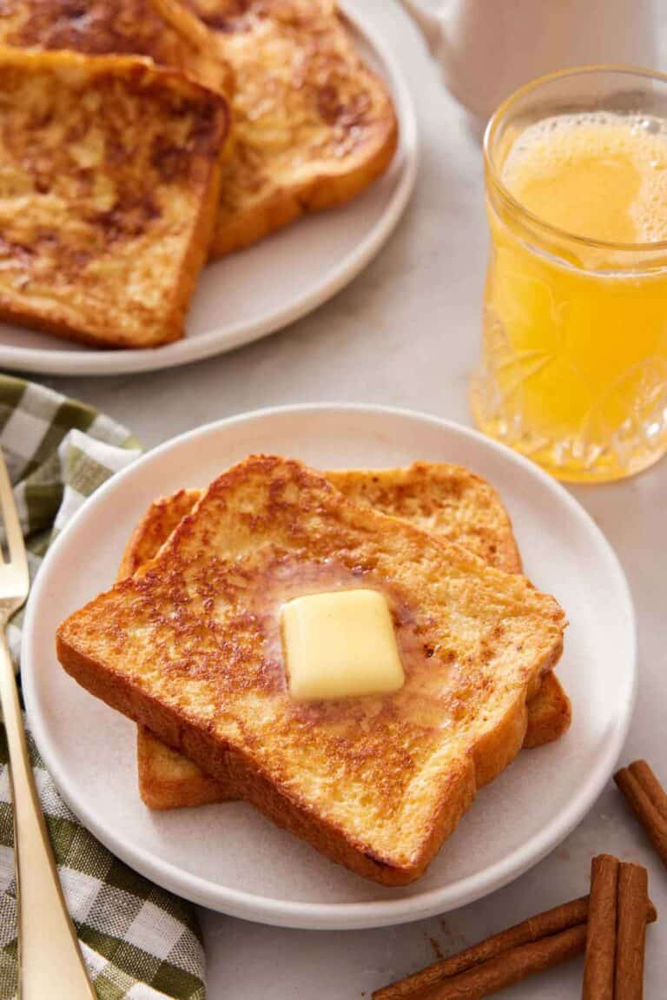

French Toast

This classic French toast recipe takes only a few minutes to prepare. Try it if you want rich, fluffy, never-soggy French toast with just the right amount of sweetness.
Ingredients
- 4 large eggs
- ¾ cup milk (180ml)
- 2 tablespoons sugar
- 1 tablespoon vanilla
- ½ teaspoon cinnamon
- 8 slices bread
- Butter
Steps
- Place a large skillet over medium heat.
- In a large bowl, whisk together the eggs, milk, sugar, vanilla, and cinnamon, and whisk until completely combined.
- Melt 1 to 2 tablespoons of butter in the hot pan.
- Place each slice of bread in the egg mixture and soak for a few seconds. Flip over and soak the other side. Carefully transfer the soaked bread to your hot pan and cook until golden brown, about 2 minutes.
- Flip over and cook the other side until golden. Serve warm with additional butter and maple syrup, if desired.